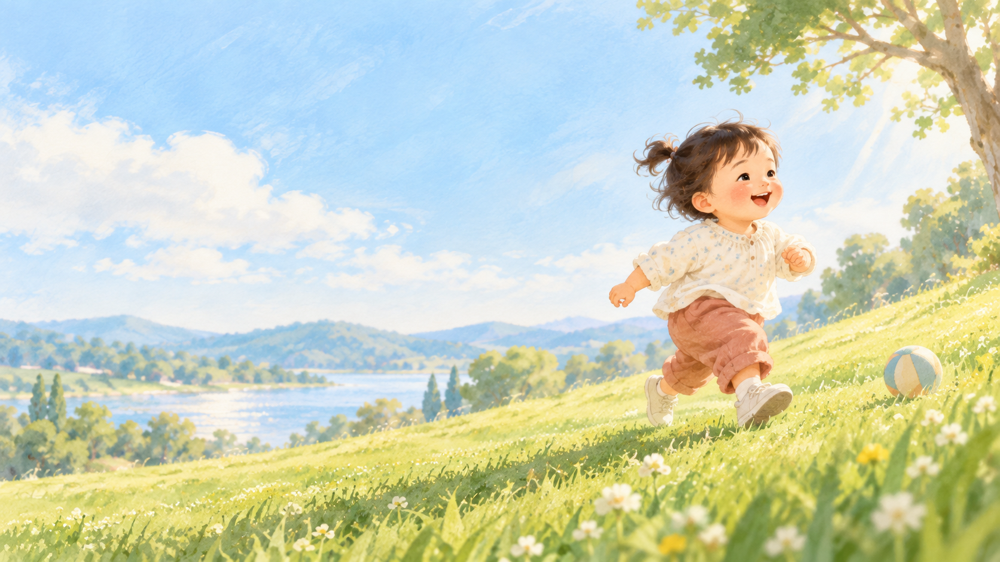

20 个月

记下日常的小变化，慢慢看见她的成长。
汇总日常观察和每月成长小评估，展示五个发展领域的阶段性成长画像。它不是医学诊断，也不代替正规发育筛查。
汇总当月的日常成长观察和已完成的小评估，生成可打印的成长档案。选好月份后点生成。
保留各月的阶段性状态与证据数量，不对不同月龄做伪精确分数比较。
系统会根据当前月龄、上次结果、已稳定掌握能力和日常记录，选出这个月最值得了解的问题。通常约5–10分钟，不追求固定题数。
基于知芽五大能区框架，18月数据参考卫健委指南、MedlinePlus及三甲医院儿科标准。2岁档为爱贝睿测评体系接入点。
1岁半游戏基于哈佛儿童发展中心、卫健委指南及国内权威早教资料，每款标注脑科学原理。2岁档为爱贝睿原版测评游戏，到龄再做。
第一部分：1岁半脑发育窗口期（基于卫健委指南、哈佛研究中心）。第二部分：爱贝睿记忆学习系列（2岁+通用理论）。